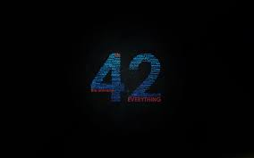
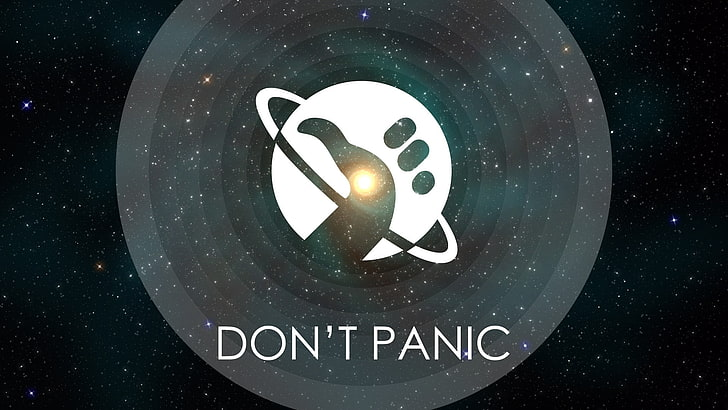

42
Siempre pensé que había algo fundamentalmente erróneo con este universo
Después de siete millones y medio de años meditando la pregunta, Pensamiento Profundo declaró que la respuesta del sentido de la vida, el universo y todo lo demás es: 42. Por supuesto esto no fue un error pero para conocer «la cuestión última» se tuvo que crear una computadora aún más poderosa y esperar un poco más de tiempo, unos cuantos millones de años. Sabemos bien como termina esto, un complot del consorcio de psiquiatras envió a los vogones a destruir la Tierra cinco minutos antes de que se conociera el sentido de la vida, el universo y todo lo demás, cosa que los habría dejado sin trabajo. Los fans de la famosísima obra de Douglas Adams, 'La guía del autoestopista galáctico' saben bien de la importancia del número 42. Vamos, después de todo es la respuesta del sentido de la vida, el universo y todo lo demás. Durante muchos años se han elaborado distintas teorías sobre el por qué Adams eligió esta cifra para una de las bromas pilares y significativas de su obra. Se ha dicho por ejemplo que el numero se deriva de una operación usando base 13, aunque más tarde el autor declaró: «Podré ser un caso perdido, pero no escribo chistes en base 13». Pero la búsqueda del significado del 42 continúa, a pesar de que el propio autor dijo que se trató de un número que eligió al azar y nada más: La respuesta a esto es muy simple. Fue una broma. Tenía que ser un número, un número ordinario y pequeño, y elegí ese. Representaciones binarias, base 13, monjes tibetanos, es todo un completo disparate. Me senté en mi escritorio, miré hacia el jardín y pensé "42 será", y lo escribí. Fin de la historia. También agregó:  Un número completamente ordinario, un número no solo divisible por dos sino también por seis y siete. Es de hecho el tipo de número que podrías presentar sin ningún tipo de miedo a tus padres. El hombre que sabe el por qué de la respuesta de la vida, el universo y todo lo demás Stephen Fry, el fantástico comediante y escritor fue amigo de Adams y es, según él, el único que sabe el por qué del número 42. Fry ha dicho que el propio Douglas le confió la razón por la que utilizó este famoso número en su obra, pero también que no se lo puedo decir a nadie y ese secreto se «lo llevará a la tumba». Eso sí, aclaró que la razón es «fascinante, extraordinaria y, cuando piensas bien en eso, completamente obvia».  Una de las razones por las que los fanáticos de la obra de Adams no cejan en su esfuerzo por comprender el significado de 42 y no un "número al azar" es porque el ingenio del autor de 'La guía del autoestopista galáctico' no era poco, por el contrario era vasto, agudo, divertido, irónico y su obra está llena de significados, referencias y críticas. Pero tal vez por esto mismo podríamos aceptar que se trata de un número al azar y el quebradero de cabeza por descifrar por qué el 42 sea la verdadera broma de Adams. Tal vez algún día Douglas Adams pensaba desentrañar su broma o tal vez jugaría con todos nosotros durante mucho tiempo, sin embargo la muerte sorprendió al autor a sus 49 años mientras estaba en el gimnasio. La vida, el universo y todo lo demás se paralizó ante la noticia de su prematura muerte el 11 de mayo de 2001, tal como lo describe Richard Dawkins en su 'Lamento por Douglas Adams'. Nos queda su maravillosa obra de ciencia ficción, su agudo humor y muchas referencias que seguimos disfrutando como la importancia de las toallas, la identidad de los ratones y claro, la respuesta de la vida, el universo y todo lo demás: 42.